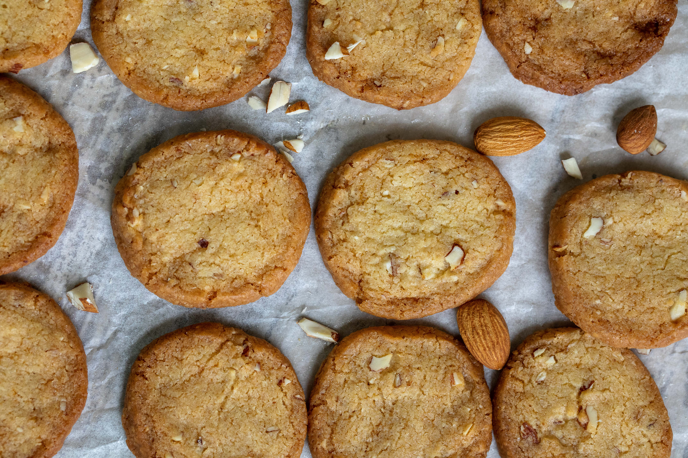

Bondkakor

200°C. Total baktid 2 timmar varav en timme i kylen. Blir ungefär 40 kakor.
Recept:
- 5,5 dl (330 g) vetemjöl
- 2 dl strösocker
- 1 msk sirap
- tsk bikarbonat
- 1 msk vatten
- 0,75 dl (50 g) grovhackad sötmandel
- 200 gram smör
Instruktioner:
- Rör ihop vetemjöl och socker i matberedare eller med elvisp.
- Tillsätt vatten, sirap och bikarbonat.
- Lägg till smöret och grovhackad sötmandel (hacka mandeln med kniv).
- Forma degen till två rullar på cirka 5 cm i diameter och täck dessa med plastfolie.
- Lägg rullarna i kylen i en timme eller tills de stelnat.
- Sätt ugnen på 200°C.
- Ta ut degen och skär den i skivor på cirka 1 cm. Lägg kakorna på en plåt med bakplåtspapper.
- Grädda kakorna mitt i ugnen cirka 5-7 minuter, tills de fått färg.
Till startsidan
Timer
05:00